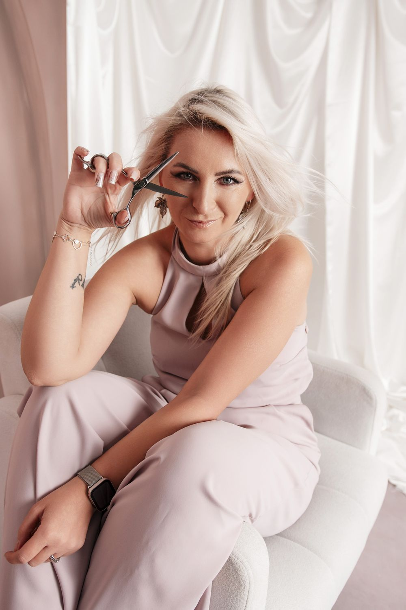

O mnie
Agnieszka Lewandowska. Dwadzieścia lat przy fotelu i osiem dokumentów, które mówią, skąd to się wzięło.
Zaczynałam w 2003 roku dyplomem akademii Toni&Guy. Dwa lata później szkoliłam się w Saks Academies w londyńskim Covent Garden — strzyżenie i koloryzacja, u ludzi, którzy uczyli wtedy pół Europy.
W 2009 zdobyłam uprawnienia pedagogiczne dla wykładowców i instruktorów. To nie jest papier dla ozdoby: przez lata prowadziłam warsztaty dla innych fryzjerek jako edukatorka L'Oréal Professionnel.
Do dziś jeżdżę na szkolenia. Techniki koloryzacji u Min Kim i Berniego Ottjesa, strzyżenie u Adama Reeda — to nie są nazwiska z ulotki, tylko ludzie, którzy uczą fryzjerów na całym świecie.
Praktycznie znaczy to jedno: zanim cokolwiek zrobię z Twoimi włosami, rozmawiamy. O tym, co chcesz osiągnąć, co da się osiągnąć na Twoich włosach, ile to potrwa i ile będzie kosztować. Bez niespodzianek w lustrze.

Droga
Toni&Guy AcademyDyplom akademii, podpisany przez międzynarodowego dyrektora artystycznego
Saks Academies — LondynCovent Garden. Szkolenie ze strzyżenia i koloryzacji
Uprawnienia dla instruktorówKurs pedagogiczno-metodyczny dla wykładowców — formalne prawo do szkolenia innych
L’Oréal H³Dołączenie do międzynarodowego grona stylistów, Akademia L’Oréal Professionnel
L’Oréal — BlondySzkolenie z rozjaśniania w Akademii L’Oréal Professionnel
Cut & Style — Adam ReedCertyfikat podpisany osobiście przez Adama Reeda
Master Class — Berni OttjesTechniki koloryzacji, warsztaty praktyczne
Master Class — Min KimTechniki koloryzacji z międzynarodową artystką L’Oréal
Dyplomy
Kliknij, żeby powiększyć. Oryginały wiszą w salonie — te dwa najstarsze wystawione są jeszcze na nazwisko panieńskie, Dziuk.